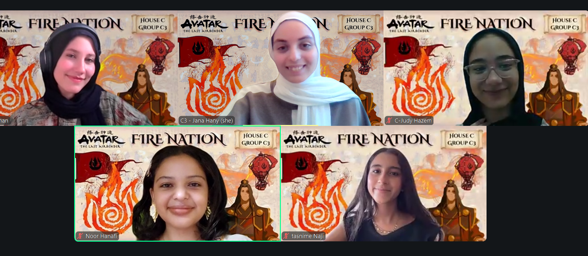

Glide through your day
like a duck on still water
Pondr turns your to-do list into a pond you can actually manage — schedule tasks, protect focus time, and let a very earnest duck talk you through pacing.
Smart scheduling
Pondr reads your day and slots tasks in where they actually fit — no overbooking the pond.
Floating tasks
Low-priority items get gently floated downstream to tomorrow instead of piling up as guilt.
Paddling vs. basking
See at a glance what's active focus work versus lighter admin — no burnout, just good pacing.
Why We Built Pondr
Balancing school, work, and personal deadlines shouldn't feel like sinking under water.
Task Paralysis & Overwhelm
Long, rigid to-do lists make it difficult to know what to start next, leading to decision fatigue, procrastination, and compounding anxiety.
Rigid, Unrealistic Schedules
Traditional tools don't care if you slept 4 hours or had an emergency. When one task slips, your whole day's schedule collapses.
Guilt-Driven Productivity
Missing artificial deadlines feels like personal failure. Standard productivity apps shame you with red alerts instead of helping you re-pace gently.
How Pondr Works
An AI productivity partner wrapped in a calm, playful duck ecosystem. Hover over any card below to explore features.
Smart Conversational Onboarding
Talk to Pondr naturally about your day instead of filling out rigid forms. Pondr factors in your real sleep, energy, and routine before assigning work.
Subtask Decomposition (Duckling Steps)
Overwhelmed by big goals like exams or competitions? Pondr breaks massive milestones into bite-sized, actionable micro-tasks.
"Let It Float" & Deferrals
When burnout strikes, Pondr proactively suggests floating low-priority tasks downstream to tomorrow without guilt or penalty.
Rubber Duck Debugging Mode
Stuck on a creative block or hard problem? Speak out loud to Pondr — a friendly assistant that listens and helps you think out loud.
Paddling vs. Basking Pacing
Categorize intense focus work as Paddling and lighter admin work as Basking to keep your daily energy perfectly balanced.
Daily Quack-In Check-Ins
Start each morning with a quick question: "How full is your pond today?" Pondr adapts the entire day's timeline based on your capacity.
From Brain Dump to Calm Execution
A simple 4-step daily rhythm that protects your peace of mind.
Morning Quack-In
Tell Duckley how you're feeling and dump all your tasks into the chat in raw text.
Auto-Pacing
Pondr separates tasks into Paddling (deep work) and Basking (light admin) blocks.
Focus & Flow
Execute one step at a time with subtle audio cues and progress tracking.
Float Downstream
Unfinished work floats safely to tomorrow with zero stress or red alarm warnings.
The Team Behind Pondr
Created with care by high school & university students balancing busy schedules firsthand. Hover over cards to view member details and LinkedIn links.

Judy Hazem
Builds conversational knowledge prompts and dynamic duck persona models for empathetic chat interactions.

Rahiq Ayman
Focused on seamless integrations, smart task algorithms, and clean responsive front-end design.

Tasnime Naji
Researches student productivity problems and translates user feedback into core app feature solutions.

Jana Hany
Creates calm, playful visual themes and user flows that make time management feel joyful rather than stressful.

Noor Hanafi
Passionate about crafting intuitive AI interfaces that lower stress and enhance everyday user productivity.

Kode With Klossy Pitch Party Team
Together building AI productivity partners that protect mental well-being!